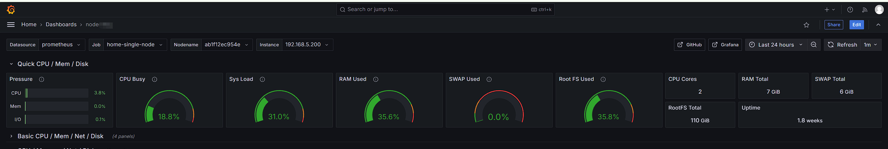
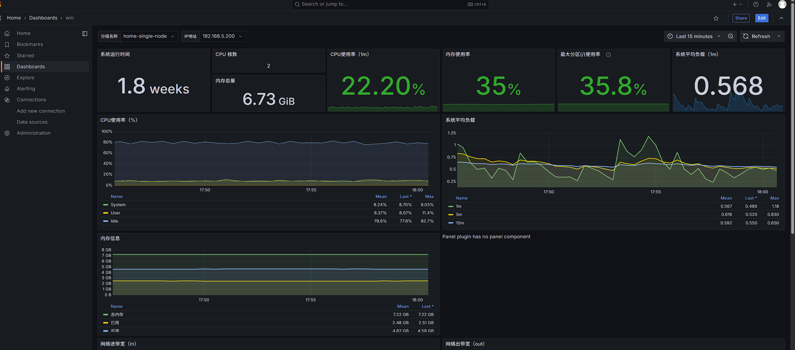

#
本文介绍如何在内网单机环境下，使用 Docker Compose 快速构建 Prometheus + Grafana + Node Exporter 监控体系，并接入 Windows 节点的系统指标。
1. 架构职责分工#
| 角色 | IP / 位置 | 部署组件 | 核心作用 |
|---|---|---|---|
| 单机监控节点 | 内网 192.168.5.200 |
Prometheus + Grafana + Node Exporter | 采集本机指标、存储历史监控数据并提供可视化面板展示 |
| Windows 被监控节点 | 内网 192.168.5.100 |
Windows Exporter | 暴露 Windows 系统各项硬件与服务指标 |
2. Linux 主节点部署#
步骤 1：准备工作目录与配置文件#
创建并进入指定的工作目录：
mkdir -p /home/dog/scripts/promethus
cd /home/dog/scripts/promethus在该目录下创建 docker-compose.yml 文件：
services:
prometheus:
image: [swr.cn-north-4.myhuaweicloud.com/ddn-k8s/quay.io/prometheus/prometheus:v3.5.0](https://swr.cn-north-4.myhuaweicloud.com/ddn-k8s/quay.io/prometheus/prometheus:v3.5.0)
container_name: prometheus
restart: always
ports:
- "9090:9090"
volumes:
- ./prometheus.yml:/etc/prometheus/prometheus.yml
- prometheus_data:/prometheus
grafana:
image: docker.1ms.run/grafana/grafana:13.0.6
container_name: grafana
restart: always
ports:
- "3001:3000" #这里3000跟我的环境冲突了，把原来的3000更改为3001
volumes:
- grafana_data:/var/lib/grafana
node-exporter:
image: [swr.cn-north-4.myhuaweicloud.com/ddn-k8s/docker.io/prom/node-exporter:v1.8.1](https://swr.cn-north-4.myhuaweicloud.com/ddn-k8s/docker.io/prom/node-exporter:v1.8.1)
container_name: node-exporter
restart: always
ports:
- "9100:9100"
volumes:
- /proc:/host/proc:ro
- /sys:/host/sys:ro
- /:/rootfs:ro
command:
- '--path.procfs=/host/proc'
- '--path.sysfs=/host/sys'
- '--path.rootfs=/rootfs'
volumes:
prometheus_data:
grafana_data:在同一目录下创建基础 prometheus.yml 配置文件：
global:
scrape_interval: 15s
scrape_configs:
- job_name: 'home-single-node'
static_configs:
- targets:
- 'node-exporter:9100'
labels:
env: 'home'
instance: '192.168.5.200'启动服务：
docker compose up -d步骤 2：配置 Grafana 数据源与看板#
- 登录 Grafana：
打开浏览器访问
http://192.168.5.200:3001（默认账号：admin，默认密码：admin）。 - 添加 Prometheus 数据源： 导航至 Connections -> Data sources -> 点击 Add data source -> 选择 Prometheus。
- URL：填入
http://prometheus:9090或http://192.168.5.200:9090。 - 点击 Save & test。
- 导入 Linux 监控看板：
- 点击右上角 + -> Import dashboard。
- 输入社区看板 ID
1860，点击 Load。 - 数据源选择刚创建的 Prometheus，点击 Import 完成导入。

3. 接入 Windows 节点监控#
步骤 1：安装 windows_exporter#
- 下载安装包：
前往 windows_exporter Releases 下载
.msi安装包。 - 安装并运行：
运行
.msi程序，安装完成后会自动注册为 Windows 系统服务并随机启动。 - 验证服务：
在 Windows 本地访问
http://localhost:9182/metrics，若有文本指标输出则说明启动成功（默认端口：9182）。
注意： 请确保 Windows 防火墙已允许 TCP
9182端口的入站访问。
步骤 2：更新 Prometheus 配置#
编辑 /home/dog/scripts/promethus/prometheus.yml：
global:
scrape_interval: 15s
scrape_configs:
- job_name: 'home-single-node'
static_configs:
- targets:
- 'node-exporter:9100'
labels:
env: 'home'
instance: '192.168.5.200'
# 新增 Windows 节点监控
- job_name: 'windows-nodes'
static_configs:
- targets:
- '192.168.5.100:9182' # 替换为实际 Windows 节点 IP
labels:
env: 'home'
os: 'windows'重启 Prometheus 使配置生效：
docker restart prometheus步骤 3：导入 Windows 专属看板#
- 打开 Grafana 界面（
http://192.168.5.200:3001）。 - 点击 + -> Import dashboard。
- 输入 Windows 仪表盘 ID
9276，点击 Load。 - 选择对应的 Prometheus 数据源，点击 Import。

4. 总结与落地效果#
完成以上步骤后，所有监控数据将持久化在 Docker 卷中。可以在 Grafana 统一视图中实时监测 Linux 与 Windows 节点的 CPU、内存、磁盘及网络流量情况。